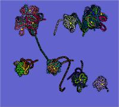
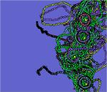
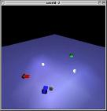
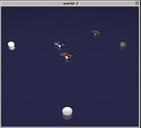
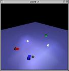
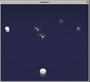
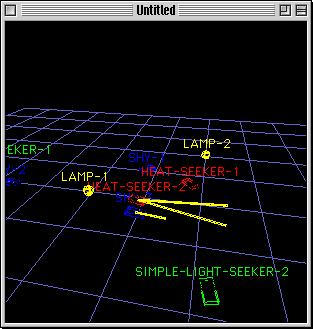

Braitenberg Vehicles
![[Vehicle image]](vehicle.jpg)
Introduction
In the book Vehicles:
Experiments in Synthetic Psychology, Valentino Braitenberg
describes a series of thought experiments in which "vehicles" with
simple internal structure behave in unexpectedly complex ways. He
describes simple control mechanisms that generate behaviors that, if
we did not already know the principles behind the vehicles' operation,
we might call aggression, love, foresight and even optimism.
Braitenberg gives this as evidence for the "law of uphill analysis
and downhill invention," meaning that it is much more difficult to
try to guess internal structure just from the observation of behavior
than it is to create the structure that gives the behavior.
I thought that was cool, so I wrote a vehicle simulator in Lisp.
You can have the source as soon as it doesn't embarrass me.
Wednesday, December 9, 1998
I have a Java version that is nearly complete and is as powerful as
the original Lisp version (that is, it's not just a Braitenberg
vehicle simulator, it is a Braitenberg vehicle simulation language).
It even reads the same world definition
files because it is really a Lisp in Java (thanks to Michael
Travers' Skij, a
Scheme interpreter implemented in and tightly integrated with Java).
You will see it here soon.
Here are a couple images from the Java work-in-progress:


The Simulator
The simulator allows one to create a world filled with vehicles and
lamps, set it in motion, and observe the resulting interactions.
The input to the simulator is a world definition file that specifies
the vehicles and lamps to be simulated and their characteristics.
Each vehicle and lamp is specified by describing its parts (e.g.,
sensors, radiators, motors) and their characteristics (e.g., sensitive
to infrared radiation, capable of maximum speed of 10 units/s), and
its brain. The brain is a network of "neurodes" that acts like a
clocked digital circuit. The brain usually drives components like
motors and radiators based on sensor input.
The simulator can produce output in the form of 2D graphics, 3D
graphics or scene description files
for other dedicated renderers. Currently it uses Jim Firby's portable
Common Graphics package for Lisp to do 2D, 3D is supported using
Apple's QuickDraw
3D API, and the simulator can generate files for the POV-Ray raytracer.
![[CG Renderer]](cg-renderer-thumb.jpg) 



I typically view a simulation run in realtime using simple 2D or 3D
graphics and tweak it until I'm ready to generate POV files and spend
a few hours raytracing.
You can look at some examples of different
kinds of vehicles simulated in various worlds. There are 2D and 3D
animations of the simulator runs that demonstrate some basic vehicle
behaviors, like aggression towards light, non-linear
response to ("worship" of) light, pursuit by predators and
avoidance by prey, and (very) simple communication
between vehicles.
These are not the only possible behaviors; The range of behavior is
limited only by your ability to wire together networks of neurodes in
the vehicles' little brains.
There is a heavily armed autonomous Combat Vehicles variant in which
vehicles can fire blasters at each other. It also shows an example of
simple communication between vehicles.
The Animation
Eventually I would like to create a high-quality, high-resolution
animation of these vehicles, and I'd like it to be interesting.
Miscellaneous topics encountered in pursuit of this goal include 3D
API programming, spline math, animation scripting languages, digital
electronics and film camera techniques. It's been fun.
Other Resources and Related Information
Many people have done work related to Braitenberg vehicles:
- A student of Michael Littman's at Duke University wrote a simulator using
Macromedia Director (requires Shockwave to run). One can drag the
vehicle and lamps around the field while the simulation is running.
- Lego Mindstorms is
a consumer version of MIT's electronic brick. Valentino Braitenberg
says "Many of the proposed experiments could be done with the
Lego Mindstorms kit."
Hackers are busy working to make it easier to build cool Lego robots;
see the Lego Mindstorms
Internals page.
- Chris Gerken has a simulator
written in Java (and one in Smalltalk?). You can see what Gerken's
vehicles look like in my simulator: gerken.txt
- Torsten Will has a Braitenberg vehicle simulator written in Java. (His page supplies the applet with parameters that do not make for a very interesting demonstration. Try this page instead.)
- Robin Edwards has a Braitenberg vehicle simulator for Linux.
- David Hogg, Fred Martin and Mitchel Resnick at the MIT Media Lab have
written a
paper
describing Braitenberg creatures built with "Electronic Bricks"
(LEGOs).
- Chris Thornton of the University of Sussex has developed a simulation
environment for track-driven robots called
POPBUGS,
and used it to
simulate Braitenberg-like vehicles.

![[parent]](../parent.gif) Home
Home
{kind=link}
{kind=link}
{kind=link}
{kind=link}